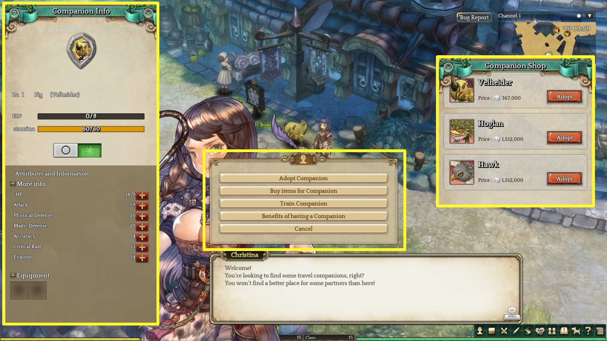
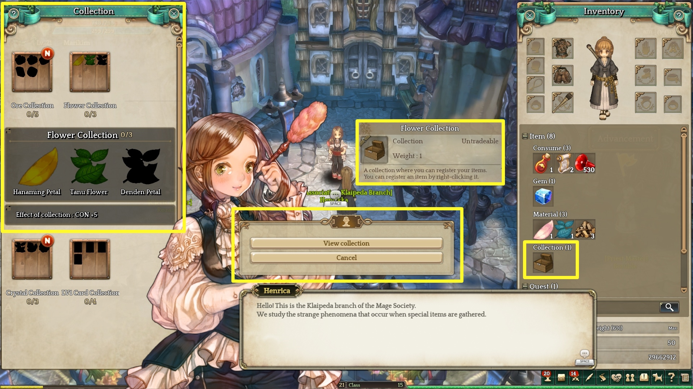
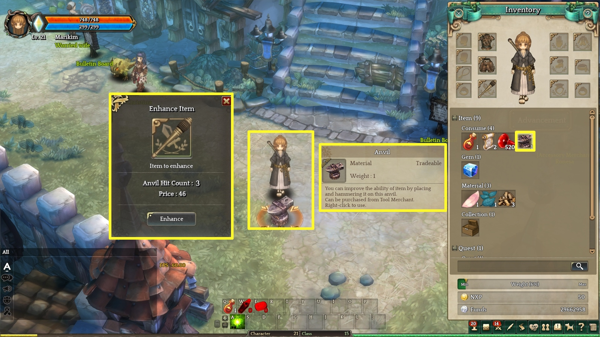
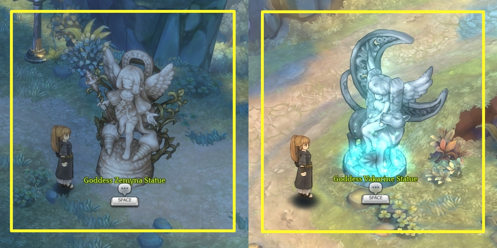

Passo 4. Aproveitando novos Conteúdos
Companheiro I Você pode treinar seu companheiro para ele se fortalecer.

Adote um companheiro no NPC de companheiro na cidade.
Companheiros auxiliam em combate e movimento.
Ao treina-lo você aumenta os atributos dele.
Clique em [F9] para abrir a tela de detalhes do seu companheiro.
Coleção I Você coletar vários itens.

Coleções são automaticamente registradas que você clica com o botão direito no item de Deck em frente a NPC da Associação mágica.
Você recebe o efeito da coleção quando conclui o registro
Melhoria de Itens I Você pode melhorar seus itens utilizando a bigorna.

No seu inventário clique com o botão direito na anvilha e depois no seu item para abrir a tela de melhoria.
Clique na bigorna para continuar e depois bata nela três vezes para melhorar o item.
Estatua dos Deuses I Reze nas estatuas dos deuses para receber bônus.

Você pode teleportar para diversas áreas usando a estatua de Vakarine e receber status points quando reza em frenta da estatua de Zemyna.
Dungeon I Dungeons são lugares perigosos em que você recebe itens especiais.
Dungeons são lugares bons para montar parties e jogar junto.
Você adquire gemas de monstros e chefões de dungeons.
Quando seu personagem morre em uma dungeon um gema pode ser perdida quando clicar em ressuscitar.